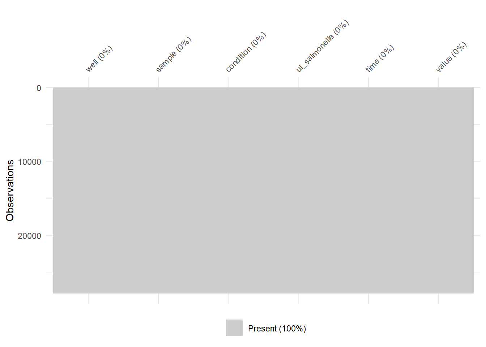
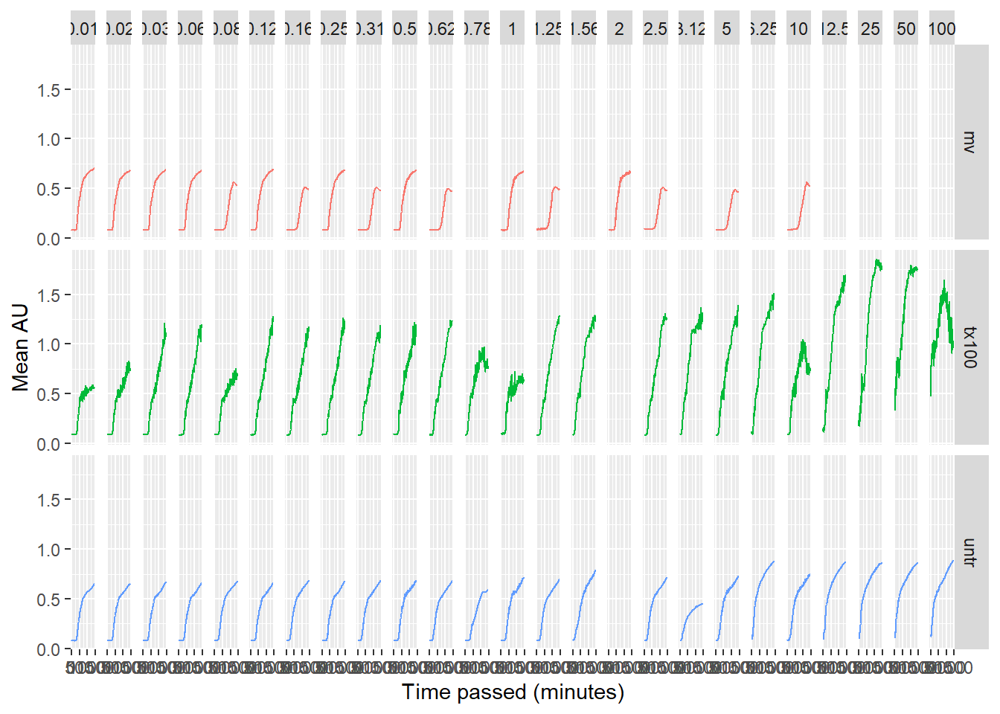

Chapter 3 Data managment principles
Imagine you receive a file attached to an email from a researcher in your research group called:
salmonella CFU kinetics OD600 in LB van ipecs 8okt2020 kleur.xlsx
The file is located in the course ./data folder.
Download it here.
You are requested to run an analysis on the raw data in this file (sheet named ‘All Cycles’). It contains data from a plate reader experiment where wells are measured over time. The researcher asks you to generate a plot per sample. No other information was provided in the original email.
Describe the following steps in an RMarkdown file. You do not need to write the R code for the actual analysis at this point - we will do that later in another exercise in this lesson. Answer these questions in your markdown file with exercises.
How would you prepare for this analysis in R/Rstudio?
Look at the contents of the file, which Excel Worksheet do you need for the analysis?
Which steps do you need to take to load the data into R
Which steps do you need to take in reshaping the file to make the dataformat match the requirement for using `{ggplot}
Think of a better file name
Write a conceptual and kind and friendly, but clear reply email (in English) to the researcher, where you address the changes that the researcher needs to make to the file in order for you to be able to analyze this data in R.Set meeting per sample per data point in apart column.
There are actually 4 very similar files lying around.
Download the data here.
Find out which one is different from the other three using their MD5sums. If you want, md5sum can handle multiple files at the same time, but wants full paths for all of them.
## ── Attaching core tidyverse packages ──────────────────────── tidyverse 2.0.0 ──
## ✔ dplyr 1.1.4 ✔ readr 2.1.5
## ✔ forcats 1.0.0 ✔ stringr 1.5.1
## ✔ ggplot2 3.5.1 ✔ tibble 3.2.1
## ✔ lubridate 1.9.3 ✔ tidyr 1.3.1
## ✔ purrr 1.0.2
## ── Conflicts ────────────────────────────────────────── tidyverse_conflicts() ──
## ✖ dplyr::filter() masks stats::filter()
## ✖ dplyr::lag() masks stats::lag()
## ℹ Use the conflicted package (<http://conflicted.r-lib.org/>) to force all conflicts to become errorsmyDir <- here::here(
"data-raw",
"md5_examples")
fileNames <- list.files(myDir, recursive = TRUE)
tools::md5sum(file.path(myDir, fileNames)) %>% enframe() -> md5sums_all
md5sums_all$filename <- fileNames
md5sums_all %>% select(filename,value)## # A tibble: 4 × 2
## filename value
## <chr> <chr>
## 1 MD5_exampledata_1.txt f3d2eeb79b4c24490bf08f483e5cadd3
## 2 MD5_exampledata_backupcomputercrash.txt f3d2eeb79b4c24490bf08f483e5cadd3
## 3 MD5_exampledata_maybethisone.txt a331f23fd3586f0100173bd28b1e319c
## 4 MD5_exampledata_savethisone.txt f3d2eeb79b4c24490bf08f483e5cadd3Determine the md5sums of the file. Save the checksums to a file [write a piece of R code]
# calculate md5sums for file "toxrefdb_nel_lel_noael_loael_summary_AUG2014_FOR_PUBLIC_RELEASE.csv"
tools::md5sum(
here::here(
"data",
"toxrefdb_nel_lel_noael_loael_summary_AUG2014_FOR_PUBLIC_RELEASE.csv"
)
) %>%
enframe() -> md5sums_toxref
md5sums_toxref %>% # write as dataframe for easy access
readr::write_csv(
here::here(
"data",
"toxrefdb_nel_lel_noael_loael_summary_AUG2014_FOR_PUBLIC_RELEASE.md5")
)Download the md5 file you just generated on the server (or upload the one you generated locally). Can you think of a way to check in an R script whether they are the same? Write the script and save it in a .R file
# calculate md5sums for file "toxrefdb_nel_lel_noael_loael_summary_AUG2014_FOR_PUBLIC_RELEASE.csv"
tools::md5sum(
here::here(
"data",
"toxrefdb_nel_lel_noael_loael_summary_AUG2014_FOR_PUBLIC_RELEASE.csv"
)
) %>%
enframe() -> md5sums_toxref
md5sums_toxref %>% # write as dataframe for easy access
readr::write_csv(
here::here(
"data",
"toxrefdb_nel_lel_noael_loael_summary_AUG2014_FOR_PUBLIC_RELEASE.md5")
)Now look at your last laboratory project and take a look at your folder structure. Clean it!
## C:/Users/Mijn-PC/Documents/r/r/worfklow_ds_2/data-raw
## ├── md5_examples
## │ ├── MD5_exampledata_1.txt
## │ ├── MD5_exampledata_backupcomputercrash.txt
## │ ├── MD5_exampledata_maybethisone.txt
## │ └── MD5_exampledata_savethisone.txt
## ├── md5_examples.zip
## ├── MinionBenchmarkPaper.pdf
## ├── salmonella CFU kinetics OD600 in LB van ipecs 8okt2020 kleur.xlsx
## ├── SupplementaryFiles
## │ ├── media-1 (1).xlsx
## │ ├── media-2 (2).xlsx
## │ ├── media-3 (1).xlsx
## │ ├── media-4 (1).xlsx
## │ └── media-5 (1).xlsx
## ├── toxrefdb_nel_lel_noael_loael_summary_AUG2014_FOR_PUBLIC_RELEASE.csv
## └── ~$salmonella CFU kinetics OD600 in LB van ipecs 8okt2020 kleur.xlsxDownload it here if you’ve lost it and take a good look at your file management…
Go over the following steps to complete this exercise.
Review your answers to the previous exercise where we used this file in this lesson.
Try reading the sheet called All Cycles in the Excel file.
What goes wrong with the formatting of the data if you start reading in the data from cell A1?
Try solving this problem.
What shape of formatting would you say this data is in? Is the data tidy?
Write a piece of code that creates a tidy format of this data. You also need to take a look a the sheet called layout to get information on the samples. Try generating a manual data frame that has 96 rows and a code for each sample. The experiment has been performed in duplo, so for each experimental condition there are two samples.
Now join your sample data dataframe to the raw data.
Export the data as a .csv file.
Write an appropriate README.txt file that accompanies this exported csv file. Save both in your data folder of your course project. (make this folder if you don’t have it yet).
</div>library(readxl)
data_platereader <- read_xlsx(
here::here(
"data-raw",
"salmonella CFU kinetics OD600 in LB van ipecs 8okt2020 kleur.xlsx"
), sheet = "All Cycles"
)## New names:
## • `` -> `...2`
## • `` -> `...3`
## • `` -> `...4`
## • `` -> `...5`
## • `` -> `...6`
## • `` -> `...7`
## • `` -> `...8`
## • `` -> `...9`
## • `` -> `...10`
## • `` -> `...11`
## • `` -> `...12`
## • `` -> `...13`
## • `` -> `...14`
## • `` -> `...15`
## • `` -> `...16`
## • `` -> `...17`
## • `` -> `...18`
## • `` -> `...19`
## • `` -> `...20`
## • `` -> `...21`
## • `` -> `...22`
## • `` -> `...23`
## • `` -> `...24`
## • `` -> `...25`
## • `` -> `...26`
## • `` -> `...27`
## • `` -> `...28`
## • `` -> `...29`
## • `` -> `...30`
## • `` -> `...31`
## • `` -> `...32`
## • `` -> `...33`
## • `` -> `...34`
## • `` -> `...35`
## • `` -> `...36`
## • `` -> `...37`
## • `` -> `...38`
## • `` -> `...39`
## • `` -> `...40`
## • `` -> `...41`
## • `` -> `...42`
## • `` -> `...43`
## • `` -> `...44`
## • `` -> `...45`
## • `` -> `...46`
## • `` -> `...47`
## • `` -> `...48`
## • `` -> `...49`
## • `` -> `...50`
## • `` -> `...51`
## • `` -> `...52`
## • `` -> `...53`
## • `` -> `...54`
## • `` -> `...55`
## • `` -> `...56`
## • `` -> `...57`
## • `` -> `...58`
## • `` -> `...59`
## • `` -> `...60`
## • `` -> `...61`
## • `` -> `...62`
## • `` -> `...63`
## • `` -> `...64`
## • `` -> `...65`
## • `` -> `...66`
## • `` -> `...67`
## • `` -> `...68`
## • `` -> `...69`
## • `` -> `...70`
## • `` -> `...71`
## • `` -> `...72`
## • `` -> `...73`
## • `` -> `...74`
## • `` -> `...75`
## • `` -> `...76`
## • `` -> `...77`
## • `` -> `...78`
## • `` -> `...79`
## • `` -> `...80`
## • `` -> `...81`
## • `` -> `...82`
## • `` -> `...83`
## • `` -> `...84`
## • `` -> `...85`
## • `` -> `...86`
## • `` -> `...87`
## • `` -> `...88`
## • `` -> `...89`
## • `` -> `...90`
## • `` -> `...91`
## • `` -> `...92`
## • `` -> `...93`
## • `` -> `...94`
## • `` -> `...95`
## • `` -> `...96`
## • `` -> `...97`
## • `` -> `...98`
## • `` -> `...99`
## • `` -> `...100`
## • `` -> `...101`
## • `` -> `...102`
## • `` -> `...103`
## • `` -> `...104`
## • `` -> `...105`
## • `` -> `...106`
## • `` -> `...107`
## • `` -> `...108`
## • `` -> `...109`
## • `` -> `...110`
## • `` -> `...111`
## • `` -> `...112`
## • `` -> `...113`
## • `` -> `...114`
## • `` -> `...115`
## • `` -> `...116`
## • `` -> `...117`
## • `` -> `...118`
## • `` -> `...119`
## • `` -> `...120`
## • `` -> `...121`
## • `` -> `...122`
## • `` -> `...123`
## • `` -> `...124`
## • `` -> `...125`
## • `` -> `...126`
## • `` -> `...127`
## • `` -> `...128`
## • `` -> `...129`
## • `` -> `...130`
## • `` -> `...131`
## • `` -> `...132`
## • `` -> `...133`
## • `` -> `...134`
## • `` -> `...135`
## • `` -> `...136`
## • `` -> `...137`
## • `` -> `...138`
## • `` -> `...139`
## • `` -> `...140`
## • `` -> `...141`
## • `` -> `...142`
## • `` -> `...143`
## • `` -> `...144`
## • `` -> `...145`
## • `` -> `...146`
## • `` -> `...147`
## • `` -> `...148`
## • `` -> `...149`
## • `` -> `...150`
## • `` -> `...151`
## • `` -> `...152`
## • `` -> `...153`
## • `` -> `...154`
## • `` -> `...155`
## • `` -> `...156`
## • `` -> `...157`
## • `` -> `...158`
## • `` -> `...159`
## • `` -> `...160`
## • `` -> `...161`
## • `` -> `...162`
## • `` -> `...163`
## • `` -> `...164`
## • `` -> `...165`
## • `` -> `...166`
## • `` -> `...167`
## • `` -> `...168`
## • `` -> `...169`
## • `` -> `...170`
## • `` -> `...171`
## • `` -> `...172`
## • `` -> `...173`
## • `` -> `...174`
## • `` -> `...175`
## • `` -> `...176`
## • `` -> `...177`
## • `` -> `...178`
## • `` -> `...179`
## • `` -> `...180`
## • `` -> `...181`
## • `` -> `...182`
## • `` -> `...183`
## • `` -> `...184`
## • `` -> `...185`
## • `` -> `...186`
## • `` -> `...187`
## • `` -> `...188`
## • `` -> `...189`
## • `` -> `...190`
## • `` -> `...191`
## • `` -> `...192`
## • `` -> `...193`
## • `` -> `...194`
## • `` -> `...195`
## • `` -> `...196`
## • `` -> `...197`
## • `` -> `...198`
## • `` -> `...199`
## • `` -> `...200`
## • `` -> `...201`
## • `` -> `...202`
## • `` -> `...203`
## • `` -> `...204`
## • `` -> `...205`
## • `` -> `...206`
## • `` -> `...207`
## • `` -> `...208`
## • `` -> `...209`
## • `` -> `...210`
## • `` -> `...211`
## • `` -> `...212`
## • `` -> `...213`
## • `` -> `...214`
## • `` -> `...215`
## • `` -> `...216`
## • `` -> `...217`
## • `` -> `...218`
## • `` -> `...219`
## • `` -> `...220`
## • `` -> `...221`
## • `` -> `...222`
## • `` -> `...223`
## • `` -> `...224`
## • `` -> `...225`
## • `` -> `...226`
## • `` -> `...227`
## • `` -> `...228`
## • `` -> `...229`
## • `` -> `...230`
## • `` -> `...231`
## • `` -> `...232`
## • `` -> `...233`
## • `` -> `...234`
## • `` -> `...235`
## • `` -> `...236`
## • `` -> `...237`
## • `` -> `...238`
## • `` -> `...239`
## • `` -> `...240`
## • `` -> `...241`
## • `` -> `...242`
## • `` -> `...243`
## • `` -> `...244`
## • `` -> `...245`
## • `` -> `...246`
## • `` -> `...247`
## • `` -> `...248`
## • `` -> `...249`
## • `` -> `...250`
## • `` -> `...251`
## • `` -> `...252`
## • `` -> `...253`
## • `` -> `...254`
## • `` -> `...255`
## • `` -> `...256`
## • `` -> `...257`
## • `` -> `...258`
## • `` -> `...259`
## • `` -> `...260`
## • `` -> `...261`
## • `` -> `...262`
## • `` -> `...263`
## • `` -> `...264`
## • `` -> `...265`
## • `` -> `...266`
## • `` -> `...267`
## • `` -> `...268`
## • `` -> `...269`
## • `` -> `...270`
## • `` -> `...271`
## • `` -> `...272`
## • `` -> `...273`
## • `` -> `...274`
## • `` -> `...275`
## • `` -> `...276`
## • `` -> `...277`
## • `` -> `...278`
## • `` -> `...279`
## • `` -> `...280`
## • `` -> `...281`
## • `` -> `...282`
## • `` -> `...283`
## • `` -> `...284`
## • `` -> `...285`
## • `` -> `...286`
## • `` -> `...287`
## • `` -> `...288`
## • `` -> `...289`
## • `` -> `...290`
## • `` -> `...291`
## • `` -> `...292`## this data looks mangled because of several things:
# there is some metadata in the top region of the sheet
# there is a weird looking headers (two headers?)
## trying skip
data_platereader <- read_xlsx(
here::here(
"data-raw",
"salmonella CFU kinetics OD600 in LB van ipecs 8okt2020 kleur.xlsx"
), sheet = "All Cycles", skip = 11
)## New names:
## • `` -> `...1`## clean up and fix names
data_platereader <- data_platereader %>%
rename(sample = Time, well = ...1) %>%
janitor::clean_names()
## which wells have data?
unique(data_platereader$well)## [1] "A01" "A02" "A03" "A04" "A05" "A06" "A07" "A08" "A09" "A10" "A11" "A12"
## [13] "B01" "B02" "B03" "B04" "B05" "B06" "B07" "B08" "B09" "B10" "B11" "B12"
## [25] "C01" "C02" "C03" "C04" "C05" "C06" "C07" "C08" "C09" "C10" "C11" "C12"
## [37] "D01" "D02" "D03" "D04" "D05" "D06" "D07" "D08" "D09" "D10" "D11" "D12"
## [49] "E01" "E02" "E03" "E04" "E05" "E06" "E07" "E08" "E09" "E10" "E11" "E12"
## [61] "F01" "F02" "F03" "F04" "F05" "F06" "F07" "F08" "F09" "F10" "F11" "F12"
## [73] "G01" "G02" "G03" "G04" "G05" "G06" "G07" "G08" "G09" "G10" "G11" "G12"
## [85] "H01" "H02" "H03" "H04" "H05" "H06" "H07" "H08" "H09" "H10" "H11" "H12"## create sample table
sample_names <- data_platereader$sample
mv_utr_tx100 <- rep(c("mv", "mv", "mv", "mv",
"untr", "untr", "untr", "untr", "untr",
"tx100", "tx100", "tx100"), times = 8)
salmonella <- read_xlsx(
here::here(
"data-raw",
"salmonella CFU kinetics OD600 in LB van ipecs 8okt2020 kleur.xlsx"
), sheet = "layout", range = "C5:N13"
) %>%
janitor::clean_names() ## New names:
## • `ul sal` -> `ul sal...1`
## • `ul sal` -> `ul sal...2`
## • `ul sal` -> `ul sal...3`
## • `ul sal` -> `ul sal...4`
## • `ul sal` -> `ul sal...5`
## • `ul sal` -> `ul sal...6`
## • `ul sal` -> `ul sal...7`
## • `ul sal` -> `ul sal...8`
## • `ul sal` -> `ul sal...9`
## • `ul sal` -> `ul sal...10`
## • `ul sal` -> `ul sal...11`
## • `ul sal` -> `ul sal...12`## $ul_sal_1
## [1] "double"
##
## $ul_sal_2
## [1] "double"
##
## $ul_sal_3
## [1] "double"
##
## $ul_sal_4
## [1] "double"
##
## $ul_sal_5
## [1] "double"
##
## $ul_sal_6
## [1] "double"
##
## $ul_sal_7
## [1] "double"
##
## $ul_sal_8
## [1] "double"
##
## $ul_sal_9
## [1] "double"
##
## $ul_sal_10
## [1] "double"
##
## $ul_sal_11
## [1] "double"
##
## $ul_sal_12
## [1] "double"salmonella <- salmonella %>%
pivot_longer(ul_sal_1:ul_sal_12,
names_to = "plate_column",
values_to = "microliters_bacteria")
## synthesize to sample table
samples <- tibble(
well = data_platereader$well,
sample = sample_names,
condition = mv_utr_tx100,
ul_salmonella = salmonella$microliters_bacteria
)
## join sample table with data
data_join <- left_join(samples, data_platereader)## Joining with `by = join_by(well, sample)`## create tidy version
data_tidy <- data_join %>%
pivot_longer(
x0_h:x24_h_5_min,
names_to = "time",
values_to = "value"
)
## fix time variable
data_tidy_time <- data_tidy %>%
mutate(time_var =
str_replace_all(
string = time,
pattern = "x",
replacement = ""
)) %>%
mutate(time_var =
str_replace_all(
string = time_var,
pattern = "_",
replacement = ""
)) %>%
mutate(time_var =
str_replace_all(
string = time_var,
pattern = "h",
replacement = ":"
)) %>%
mutate(time_var =
str_replace_all(
string = time_var,
pattern = "min",
replacement = ""
)) %>%
separate(
col = time_var,
into = c("hours", "minutes"),
remove = FALSE
) %>%
mutate(
minutes = ifelse(minutes == "", "0", minutes)
) %>%
mutate(minutes_passed = 60*as.numeric(hours) + as.numeric(minutes))
## misingness
data_tidy %>%
naniar::vis_miss()
## graphs
data_tidy_time %>%
group_by(condition, ul_salmonella, minutes_passed) %>%
summarise(mean_value = mean(value)) %>%
mutate(ul_salmonella = round(as.numeric(ul_salmonella), 2)) %>%
ggplot(aes(x = minutes_passed, y = mean_value)) +
geom_line(aes(colour = condition), show.legend = FALSE) +
facet_grid(condition ~ ul_salmonella) +
xlab("Time passed (minutes)") +
ylab("Mean AU")## `summarise()` has grouped output by 'condition', 'ul_salmonella'. You can
## override using the `.groups` argument.